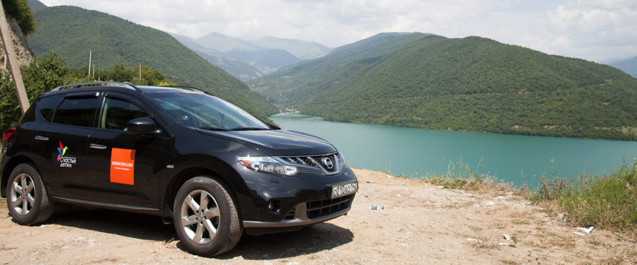

Люблю получать новые опыты и новые встречи со старыми знакомыми люблю. По приезду из Грузии решил объединить эти своих две любви и позвал друзей из фейсбука на обед. Но не простой обед, а благотворительный.

За участие в «обеде» я попросил у друзей по 500 рублей. Деньги будут переданы в фонд в качестве взноса на покупку спортивной площадки для детского дома №2.
Я создал событие в фейсбуке и разослал приглашение тем, кто хотя бы в теории, по моему мнению, мог бы принять участие в таком мероприятии. Около 140 приглашений. Откликнулись 23. Согласились прийти — пятнадцать.
Разумеется, я понимал, что большая часть согласившихся на обед не придут, но результат уже был интерсен. Я даже начинал волноваться, ведь изначально я предполагал, что мы просто поболтаем с парой-тройкой человек и Грузии да о новостях.
Обед было решено провести в кафе оздоровительного центра «Бодрость», мы там обедаем с другими начинающими спортсменами после тренажёрного зала. Довольно свежее, уютное и недорогое заведение.
Принять участие в обеде, в результате, решили, кроме меня самого, 7 человек. Причём это получилась настоящая дружеская встреча. С Евгением Огородниковым мы долго разговаривали про велосипеды (он пришёл раньше всех), с Алексеем Поляковым — про его проект GO-Kuzbass, Андрей Шавнев посетовал на сложности в ресторанном бизнесе после введения санкций на ввоз продуктов, а все вместе мы пили чай на травах и обсуждали Грузию, Россию и Кузбасс.
4 тысячи рублей будут завтра переданы в благотворительный фонд, а всем участникам хочется ещё раз сказать большое спасибо за поддержку в новом опыте. Обязательно путешествуйте, встречайтесь с друзьями и приглашайте меня на такие вот встречи.